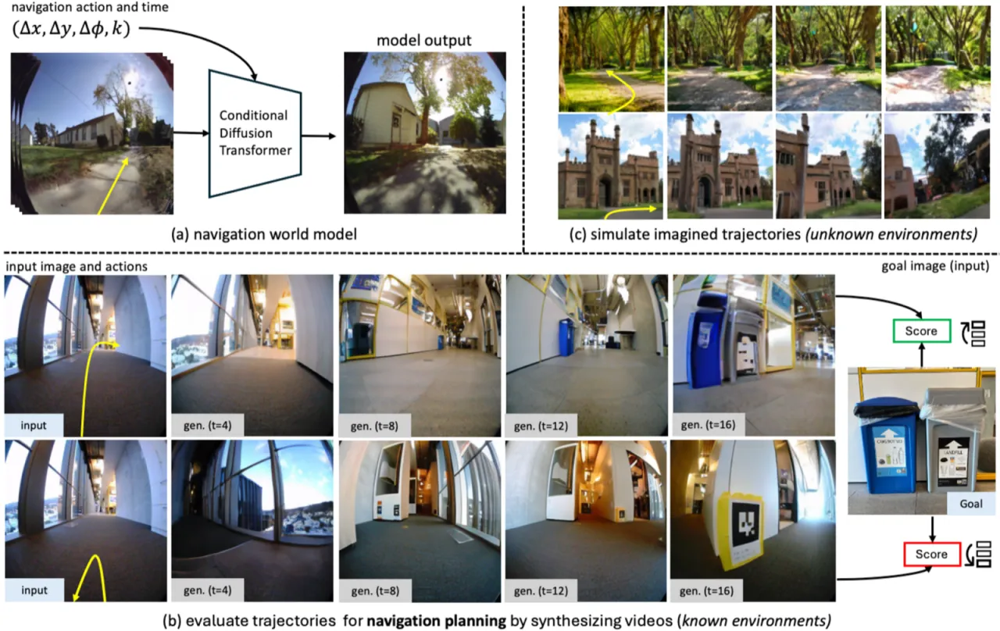
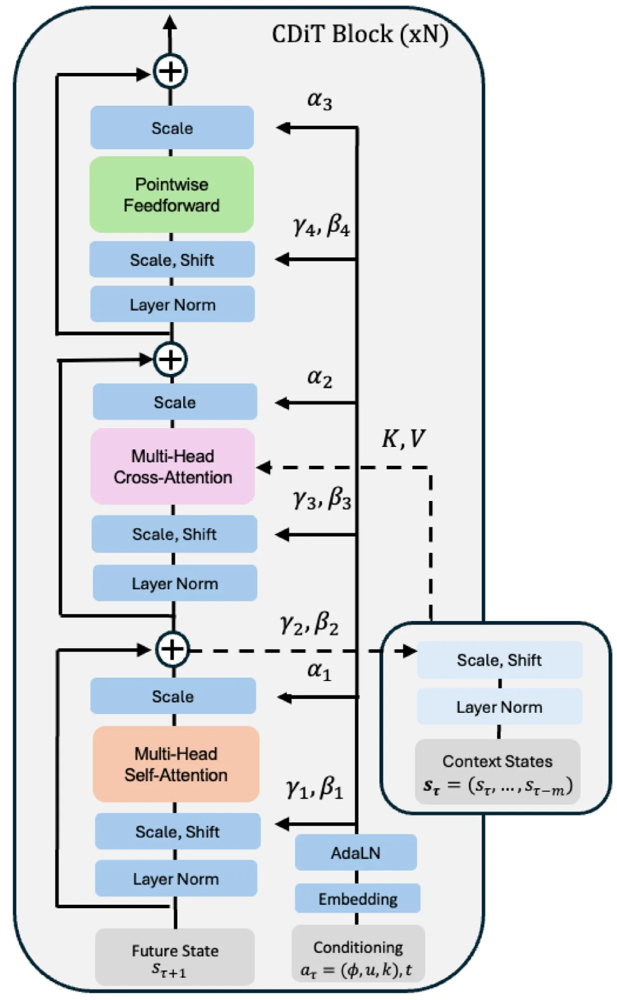
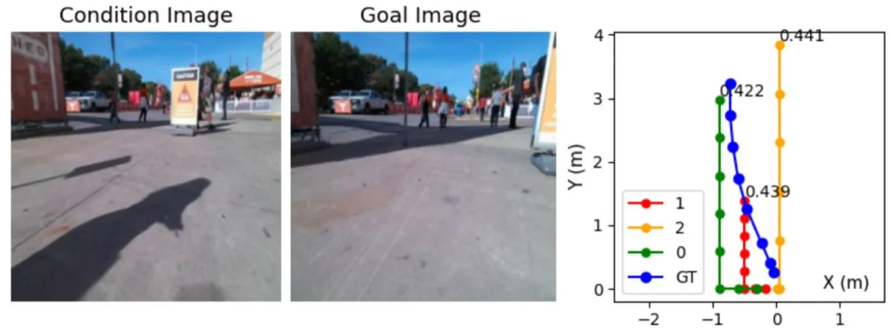
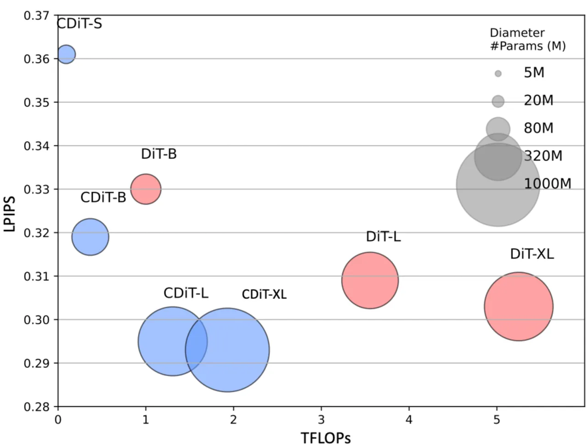
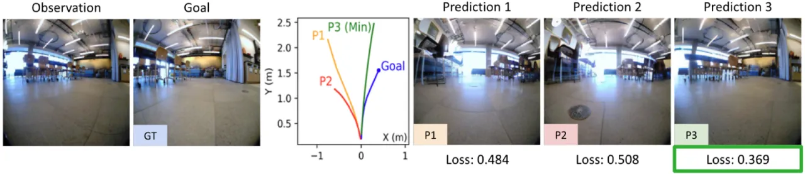

本文提出 Navigation World Model（NWM）——一个可控视频生成系统，输入过去帧与导航动作后预测未来视觉观测， 进而在不依赖固定策略的情况下进行轨迹规划与约束融合。核心架构为 Conditional Diffusion Transformer（CDiT）， 以线性复杂度处理多帧上下文，规模扩展至 10 亿参数，并通过机器人与人类两类第一人称视频联合训练， 实现跨环境、跨实体的泛化能力。
现有的视觉导航策略通常是"硬编码"的：一旦训练完成，就无法在推理阶段动态引入新的约束或反事实推理。 如果导航过程中遇到障碍、需要绕道，或需要在完全陌生的场景中规划路径，这类策略几乎无从应对。 更根本的问题是：如何让机器人在脑中"想象"轨迹，并以此筛选出最优方案？
"Unlike fixed policies, NWM can imagine trajectories considering constraints and counterfactuals, enabling dynamic constraint incorporation during the planning phase."

NWM 将导航建模为条件视频生成问题：给定历史帧序列和导航动作 ai = (u, φ)（其中 u ∈ ℝ² 控制前后/左右平移，φ ∈ ℝ 控制偏航角）， 预测未来某时刻的视觉观测。 训练时额外引入时间偏移量 k（timeshift），允许模型"跳跃"到任意未来时刻， 并采用"每状态多目标"策略防止动作与时间的混淆（action-time entanglement）。

使用 Cross-Entropy Method（CEM）在 NWM 内直接搜索动作序列。 能量函数平衡两个目标：
从已有导航策略（如 NoMaD）采样多条候选轨迹（如 ×32 条）， 再用 NWM 对每条轨迹进行"视频模拟"， 选出最接近目标、约束违反最少的轨迹执行。 无需对外部策略重新训练，即可赋予其动态约束能力。

实验使用多个机器人与人类第一人称视频数据集：SCAND（8.7h）、TartanDrive（5h）、RECON（40h）、 HuRoN（75h）构成已知环境训练集；GO Stanford（25h）作为未知环境评测集； Ego4D（908h 导航相关片段）提供无标注辅助数据。 导航指标为 Absolute Trajectory Error（ATE）和 Relative Pose Error（RPE）； 视觉质量指标为 LPIPS、DreamSim、PSNR、FVD、FID。
| 方法 | ATE (m) ↓ | RPE ↓ |
|---|---|---|
| GNM | 1.87 | 0.73 |
| NoMaD（外部策略基线） | 1.93 ± 0.04 | 0.52 ± 0.00 |
| NWM + NoMaD (×32 samples) | 1.78 ± 0.03 | 0.48 ± 0.01 |
| NWM standalone | 1.13 ± 0.02 | 0.35 ± 0.01 |
| 方法 | FVD ↓ | 说明 |
|---|---|---|
| DIAMOND | 762.73 | 游戏世界模型基线 |
| NWM（4 FPS，16s） | 200.97 | 本文方法 |

在"先向前再转弯"、"先向左/右再向前"等动作约束下规划， 与无约束基线相比，终点位移偏差极小： 前向优先约束 δu +0.36±0.01m、δφ +0.61±0.02； 左右优先约束 δu -0.03±0.01m、δφ +0.20±0.01。

引入 Ego4D 无标注数据后，GO Stanford（未知环境）评测结果改善： LPIPS 从 0.658 → 0.652，DreamSim 从 0.478 → 0.464； 同时 RECON（已知环境）性能保持在 ~0.30 不退化。
在 RECON 上预测未来 4 秒（LPIPS 为主指标，越低越好）：
| 变体 | LPIPS ↓ |
|---|---|
| 1 个目标/样本 | 0.312 |
| 4 个目标/样本（最终设置） | 0.296 |
| 1 帧上下文 | 0.304 |
| 4 帧上下文 | 0.296 |
| 仅时间条件（无动作） | 0.760 |
| 动作 + 时间联合条件 | 0.296 |
在分布外（out-of-distribution）场景中，模型的输出会逐渐向训练数据靠拢， 出现"mode collapse"现象——生成图像的多样性和忠实度随时间下降。 论文图 10 以陌生环境为例，展示了该失败案例。
NWM 难以准确模拟行人等动态物体的运动，当前版本对动态场景的预测质量有限。
当前动作表示为 a = (u, φ)，仅覆盖 3 个自由度（前后、左右平移 + 偏航角）。 扩展到完整 6-DoF 以支持更复杂机器人平台被列为未来工作。